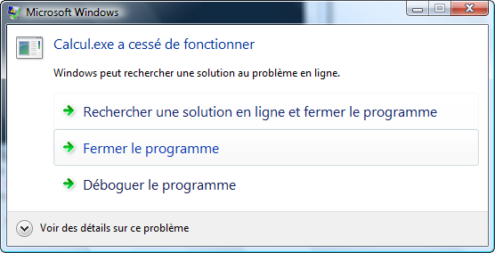
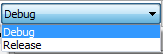
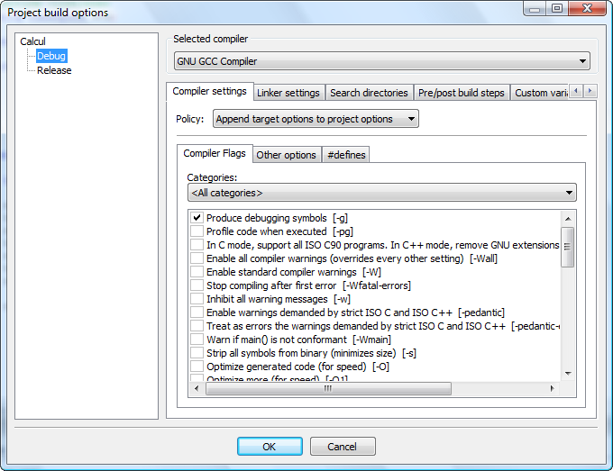
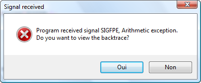
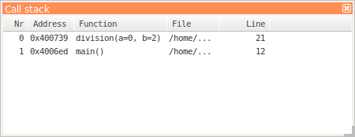
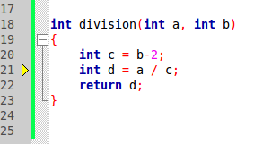
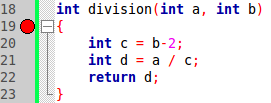
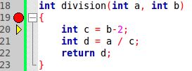
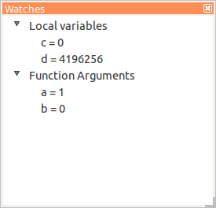
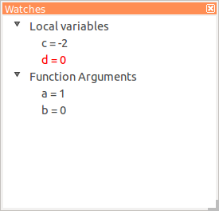

Dans ce mini-tuto, vous allez apprendre à déboguer un programme. On parle de bogue (ou bug) dans un programme quand ce dernier compile mais plante lors de son exécution.
Ces bogues sont souvent difficiles à détecter rien qu'en lisant le code, car d'une part on ne sait pas quelle ligne cause l'erreur et on ne connaît souvent pas non plus la valeur des différentes variables au moment du plantage.
Heureusement, il existe des programmes appelés débogueurs, ou dévermineurs ( :) ) si on francise, qui permettent de nous aider dans nos recherches d'erreurs.
Dans ce chapitre, je vais vous présenter à l'aide d'un exemple simple le débogueur qui est inclus dans Code::Blocks.
Pour comprendre l'utilité de cet outil merveilleux qu'est le débugueur, je vous propose de passer par un exemple.
Prenons par exemple le code suivant :
#include <iostream>
using namespace std;
int division(int a, int b);
int main()
{
for(int x(1); x<10; ++x)
{
for(int y(0); y<10; ++y)
{
cout << division(x, y); //Affiche le résultat de la fonction
}
}
return 0;
}
int division(int a, int b)
{
int c = b-2;
int d = a / c;
return d;
}
Ce code semble, en apparence, tout à fait inoffensif.
... mais qui cache bien son jeu.
Pourtant, si vous le compilez et le lancez, vous obtiendrez un message d'erreur. Sous Vista, vous pourriez par exemple obtenir la fenêtre suivante :

Et sous Linux, en ligne de commande vous aurez plutôt ceci :
Floating point exception
Ce message nous en dit déjà un peu plus, mais on ne sait pas d'où provient l'erreur.
Pour le moment, cliquez simplement sur "Fermer le programme".
Je vous mets au défi de trouver l'erreur dans ce programme rien qu'en lisant le code. :soleil: Les plus malins se douteront peut-être que l'erreur a lieu au moment de la division puisque c'est la seule opération potentiellement à risque si le diviseur vaut 0.
Une mauvaise solution
Une idée que l'on voit parfois parmi les programmeurs débutants est d'essayer de repérer l'erreur en plaçant une ligne du type :
std::cout << "Ligne 22" << std::endl;
entre chaque instruction du code source. Ceci permet effectivement de trouver la ligne où se situe l'erreur et permet aussi d'afficher la valeur des variables en faisant des lignes du type :
std::cout << "Ligne 187, La variable a vaut : " << a << std::endl;
Mais si vous avez énormément de lignes de code et en plus un grand nombre de variables, vous perdrez énormément de temps à faire cela. De plus si l'erreur provient d'une mauvaise manipulation de pointeurs, vous aurez beaucoup de peine à la trouver.
Le moyen le plus efficace passe par le débogage de son programme à l'aide d'un outil approprié.
Pour déboguer un programme, il faut tout d'abord le préparer pour cela. Quand vous lancez votre programme, il n'y a aucun moyen de connaître depuis l'extérieur la valeur des variables qui sont utilisées par ce dernier. Il faut donc modifier le programme pour que le débogueur puisse avoir accès à ces valeurs.
Mais si on doit modifier le code source, alors autant faire des std::cout partout, ça ira plus vite !
Attention ! J'ai dit qu'il fallait modifier le programme, pas le code source. Rappelez-vous les premiers chapitres, quelle est la chose qui écrit le programme en langage machine ? :diable:
Le compilateur !
Il faut donc dire au compilateur que l'on voudra déboguer le programme qu'il compile. Il faut pour cela modifier les options de compilation.
Sous Code::Blocks c'est très simple, il suffit de changer la cible de compilation pour passer en mode Debug. Cela se fait au moyen du petit menu déroulant suivant :

Vous pouvez alors vérifier que le compilateur va bien ajouter les symboles nécessaires au déboguage en ouvrant la fenêtre Project -> Build Options...
Vous devriez avoir une fenêtre de ce type qui s'ouvre devant vous :

L'important est que la ligne "Produce debugging symbols [-g]" soit cochée et que la ligne "Strip all symbols from binary (minimizes size) [-s]" ne soit pas cochée.
Recompiler son code
Il faut alors recompiler son programme pour prendre en compte les modifications faites.
Je vous conseille de faire "Rebuild" (Ctrl-F11) et pas simplement "Build" pour être sûr que tous les fichiers seront bien recompilés avec les nouvelles options.
Tout est maintenant prêt pour passer aux choses sérieuses. :zorro:
Sous Code::Blocks, vous devriez avoir une petite barre d'outils que vous n'avez jamais utilisée. Il s'agit de la barre suivante :
Si vous ne l'avez pas, vous pouvez l'ajouter en faisant View -> Toolbars -> Debugger.
Cette barre est composée de 9 boutons. Je vous les présente en vitesse, nous verrons les plus utiles à votre niveau en détails plus loin dans ce chapitre.
Debug/Continue (F8) - Exécute le programme jusqu'au point d'arrêt suivant ou jusqu'à la prochaine erreur.
Run to cursor (F4) - Exécute le programme jusqu'à la ligne du code où se trouve la souris.
Next line (F7) - Passe à la ligne de code suivante.
Next instruction (Alt-F7) - Passe à l'instruction suivante.
Step into (Ctrl-F7) - Entre dans la portée.
Step out (Ctrl-Alt-F7) - Sort de la portée.
Stop debugger (-) - Arrête le programme.
Les deux derniers (menus déroulants) servent à choisir quelles informations vous voulez afficher.
Trouver une erreur
Pour trouver l'erreur, il va falloir exécuter le programme et comme on ne sait pas encore à quelle ligne se trouve le problème, nous allons lancer l'exécution jusqu'à ce qu'on arrive à une erreur. Il faut donc cliquer sur "Debug/Continue".
Comme précédemment, le programme va planter. :p Sous Windows, j'obtiens la fenêtre suivante :

Cette fenêtre me donne déjà plusieurs informations malgré son caractère un peu hostile. Premièrement, je vois que l'erreur qui a causé le plantage est une Arithmetic exception. Cela veut dire que c'est une erreur de calcul qui s'est produite. La deuxième information importante est que le débogueur a pu garder une trace de l'erreur. De plus il nous propose de voir cette trace. Je vous invite donc à cliquer sur « Oui ». :-°
À ce moment là apparaît une nouvelle fenêtre.

Elle présente un tableau de toutes les fonctions qui sont en cours d'exécution. On parle de « pile d'appel » des fonctions.
Par défaut les fonctions sont classées selon leur position sur la pile. La plus haute étant la fonction dans laquelle s'est produit le plantage. La fonction directement en-dessous étant la fonction qui a appelé la fonction qui a planté. :-° Et ainsi de suite... On trouvera donc, dans les cas normaux, la fonction main à la dernière ligne du tableau, puisque c'est elle qui réalise les premiers appels de fonctions.
La 3e colonne nous donne le nom de la fonction avec la valeur des arguments qu'elle a reçus. On voit par exemple ici que les paramètre qu'a reçu la fonction division lors du plantage sont a=0 et b=2.
La 4e colonne nous donne une information précieuse, le fichier dans lequel s'est produit l'erreur. Cela semble stupide ici, mais si vous avez des dizaines de fichiers, ce n'est pas si anodin que ça.
Et enfin la dernière colonne nous donne la ligne où se trouvait l'ordinateur dans chacune des fonctions au moment du plantage.
Comment se fait-il que l'ordinateur se trouve à deux endroits différents du code ?
Il ne se situe en réalité qu'à un seul endroit. Si vous regardez le fichier source, vous verrez que la ligne 12 correspond à la ligne d'appel de la fonction division(). Le programme s'est donc arrêté à la ligne 12 du main() pendant l'appel à la fonction division(). Et plus précisément, à la ligne 21 de cette dernière.
Si vous êtes observateur, vous aurez également remarqué une petite flèche jaune dans la bordure qui indique l'endroit précis de l'erreur, comme sur l'illustration suivante :

La ligne 21 correspond à la ligne où se situe la division. Il nous faudrait cependant plus d'informations sur les valeurs des variables pour détecter ce qui cause l'erreur.
La première chose à faire est de définir un point jusqu'au quel le programme devra s'exécuter. Le mieux dans notre cas serait d'exécuter le programme jusqu'au début de la fonction division().
Pour placer un point d'arrêt (breakpoint), c'est très simple. Il suffit de cliquer sur la bande grise à côté du code à l'endroit où l'on souhaite le placer. Un rond rouge devrait apparaître.

Vous pouvez connaître la liste de tous les points d'arrêts de votre code source en affichant la liste des points d'arrêts. Elle se trouve dans le menu Debug -> Debugging windows -> Breakpoints.
On peut alors exécuter à nouveau le programme en cliquant sur "Debug/Continue" (F8). Le programme s'exécute alors jusqu'à la ligne où se situe le point rouge puis il attend.
Vous pouvez en tout temps connaître le point où se situe l'ordinateur en cherchant la petite flèche jaune dans la bande grise. Comme on l'a vu précédemment.

Avancer d'un pas
On peut ensuite avancer d'un pas en appuyant sur "Next line" (F7) ou "Next instruction" si vous avez plusieurs instructions sur la même ligne.
Vous devriez voir la petite flèche jaune avancer dans le code source et le programme s'exécuter.
Si vous allez assez loin, vous allez arriver à la ligne 21 et... ne pas faire planter le programme. o_O Et c'est normal ! Souvenez-vous que le plantage survenait lorsque a=0 et b=2, ce qui n'est pas le cas ici. Il faudrait pouvoir connaître "en live" la valeur des différentes variables et arguments. Et ça tombe bien, le débugueur sait faire ça.
Afficher la valeur des variables
On peut connaître la valeur de toutes les variables présentes dans une portée en ouvrant la fenêtre "Watches". Elle se trouve dans le menu Debug->Debugging windows->Watches.
Si vous vous situez au point d'arrêt, la fenêtre devrait afficher ceci :

Vous avez en premier les deux variables déclarées dans la fonction avec leurs valeurs à ce moment-là et ensuite la valeur des arguments que la fonction a reçus. Les valeurs de c et d sont "bizarres" parce qu'à ce moment-là du code, elles n'ont pas encore été initialisées.
Si vous avancez dans le programme, toujours avec F7, vous verrez les valeurs des deux variables changer. La dernière modification s'affiche en plus en rouge de sorte que l'on puisse bien suivre ce qui se passe.

Cette fois, les variables ont pris des valeurs plus cohérentes. Il ne nous reste plus qu'à avancer dans le programme jusqu'à ce qu'on arrive dans la situation où a=0 et b=2. Pour ce faire, vous pouvez avancer à coup de F7 jusqu'à arriver au plantage ou enlever le point d'arrêt et utiliser F8. La deuxième méthode est plus rapide puisqu'elle nous fait aller directement au point du problème. Mais il arrive parfois qu'il faille y aller pas-à-pas pour bien voir tout ce qui se passe.
Arrivé au stade du plantage, vous devriez pouvoir trouver la faute vous-même. La fenêtre "Watches" devrait indiquer c=0. Et donc le calcul de d va nécessiter une division par zéro.
Cela veut dire que la valeur b=2 pose problème dans cette fonction. A vous de changer le code source en conséquence. C'est de toute façon un exemple bidon. ;)
Notre objectif est donc atteint, nous avons pu repérer la ligne qui cause un crash du programme, trouver les causes de ce plantage en observant la valeur des variables et finalement corriger cette erreur.
Dans ce mini-tutoriel, vous avez appris à utiliser les bases du débugueur inclus avec Code::Blocks sur un petit exemple. Cela devrait vous aider à trouver les erreurs qui pourraient apparaître dans vos propres programmes.
Si vous avez des questions, n'hésitez-pas à passer sur le forum C++ où les membres se feront un plaisir de vous aider.